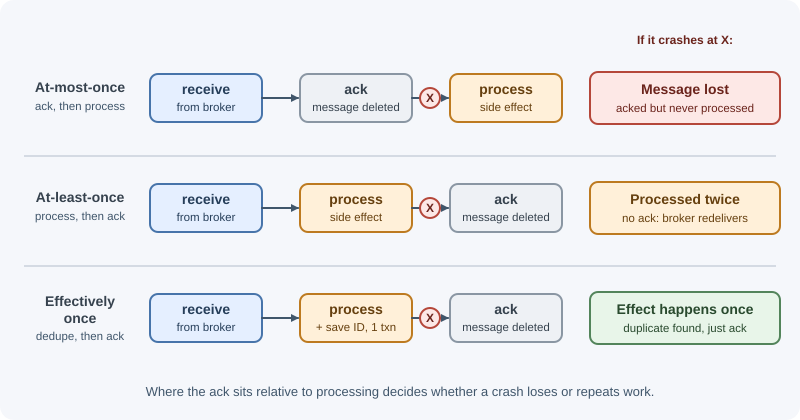
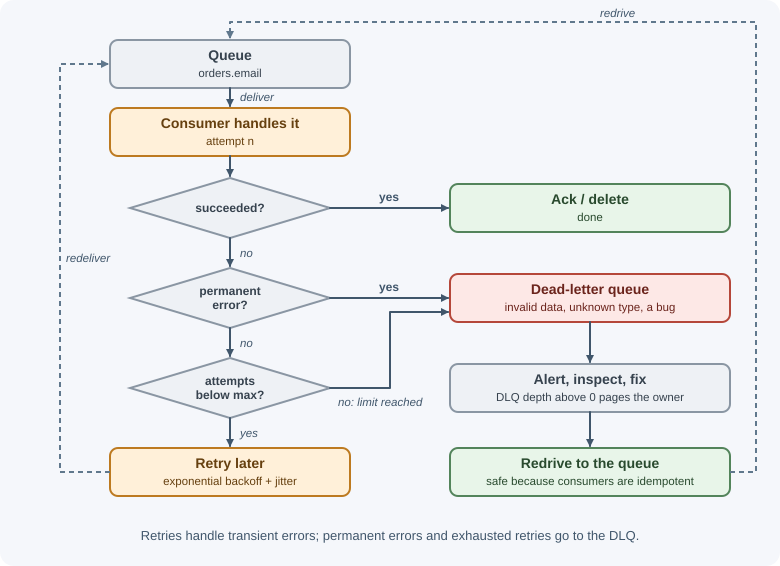
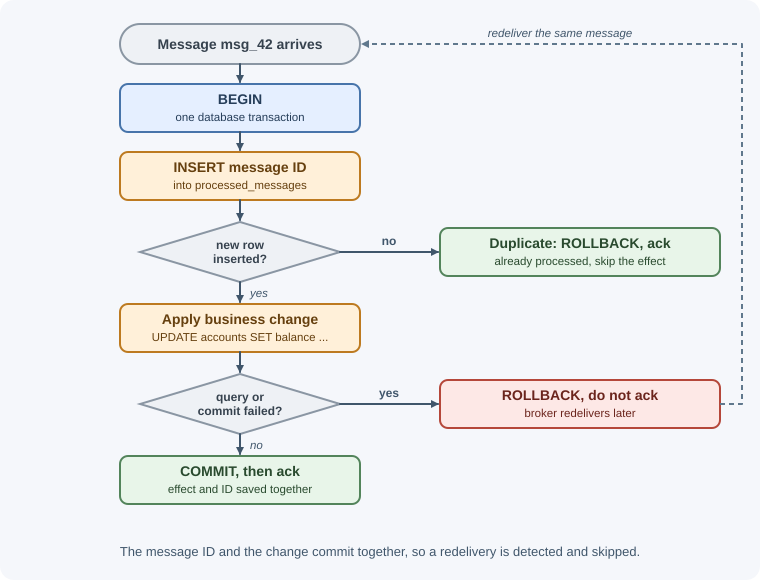

Delivery Guarantees and Ordering¶
Every messaging system promises something about how often a message is delivered (never more than once? at least once?) and in what order. These promises decide whether your system can lose an order, charge a card twice, or apply updates in the wrong sequence. This page explains the guarantees, where they break, and how to build consumers that are correct anyway.
Why it matters¶
- Networks and processes fail between any two steps. A consumer can finish its work and crash before acknowledging; a producer can send a message and lose the broker's confirmation. Each gap produces either a lost message or a duplicate.
- Most production systems are at-least-once, so duplicates are normal, not exceptional. A consumer that is not idempotent will eventually double-ship, double-email, or double-charge.
- Ordering is weaker than people assume. Parallel consumers and retries reorder messages even on a "FIFO" queue.
- One malformed message can block or flood a system unless poison messages are detected and set aside.
Real-world usage¶
- Stripe webhooks are at-least-once. Stripe's documentation warns that
webhook endpoints might occasionally receive the same event more than once,
and tells integrators to log the IDs of processed events and skip ones
already seen. It also says not to use the event's
createdtimestamp to decide order, but to track event IDs instead (Stripe webhooks). - Stripe idempotency keys. Stripe's API accepts an idempotency key so a client can safely retry after a connection error without creating a second object; for API v1 Stripe saves the status code and body of the first request made with a key and returns them for retries (Stripe API reference).
- Shopify payments. Shopify's guide to resilient payment systems lists idempotency keys among its top practices: at Shopify's scale, a once-in-a-million failure during payment processing happens many times a day, and a retried payment must not charge a card twice (Shopify Engineering).
- Slack avoids job loss with durable storage. Slack replaced its purely in-memory Redis job queue path with Kafka as durable storage, to buffer against memory exhaustion and job loss (Slack Engineering).
- Amazon measures availability with DLQs. The AWS Builders' Library notes that a message which runs out of retries is dropped or put in a dead-letter queue, and that the rate of dropped or dead-lettered messages is a useful availability measurement, though it can detect problems late (Avoiding insurmountable queue backlogs).
How it works¶
The three delivery semantics¶

| Semantics | Promise | How it is achieved | Risk |
|---|---|---|---|
| At-most-once | Delivered zero or one time | Acknowledge (or commit) before processing; no retries | Messages can be lost |
| At-least-once | Delivered one or more times | Acknowledge after processing; redeliver if no ack | Duplicates |
| Exactly-once | Delivered and processed exactly one time | Only within a closed system (for example Kafka transactions), or approximated with deduplication | Costly, limited in scope |
At-most-once¶
receive -> ACK -> process
X crash here: the message is gone forever
Acceptable for data where a loss is harmless and duplicates are worse: high-volume metrics, a live "user is typing" indicator.
At-least-once¶
receive -> process -> ACK
X crash here: no ack, so the broker redelivers -> processed twice
The default choice for business data. You accept duplicates and make the consumer idempotent.
Exactly-once and "effectively once"¶
True exactly-once delivery to an arbitrary consumer is not possible in general: the consumer's side effect (a database write, an email, a payment) and the acknowledgement to the broker are two separate actions in two separate systems, and a crash can always land between them.
What systems actually offer:
- Exactly-once inside one system. Kafka transactions can atomically consume from a topic, produce to other topics, and commit offsets, so a read-process-write pipeline that stays inside Kafka produces each result once. See Apache Kafka.
- Deduplication windows. SQS FIFO queues drop a message whose deduplication ID was already seen in the last five minutes. That prevents duplicate sends, not duplicate processing after a consumer crash.
- Effectively once = at-least-once + idempotent processing. The broker may deliver twice, but the consumer recognizes the duplicate and the side effect happens once. This is the practical answer for almost every system.
Where messages get lost or duplicated¶
Producer ---(1)---> Broker ---(2)---> Consumer ---(3)---> Side effect
| Stage | Loss happens when | Duplicate happens when | Protection |
|---|---|---|---|
| (1) Publish | The producer does not wait for the broker's confirmation, and the broker crashes before storing the message | The broker stored the message, but the confirmation was lost, so the producer retries | Publisher confirms / acks=all; idempotent producers or deduplication IDs |
| Broker storage | The message was not persisted, or stored on one node that died | (rare) | Durable queues, persistent messages, replication |
| (2) Delivery and ack | Auto-ack: the broker considers it done on delivery, then the consumer crashes | The consumer processed it but the ack was lost or the consumer crashed before acking | Manual ack after processing |
| (3) Side effect | The consumer acked, then failed to apply the effect | Redelivery applies the effect again | Ack after the effect; idempotent effect |
Also note the dual-write problem on the producer side: saving to your database and publishing to the broker are two writes that can disagree. The transactional outbox pattern fixes it.
Acknowledgements¶
- Automatic acknowledgement: the broker marks a message done as soon as
it is delivered (RabbitMQ
noAck: true) or the client commits positions on a timer (Kafka auto-commit). Simple and fast, but a crash mid-processing can lose work; with periodic commits it can also cause duplicates. - Manual acknowledgement: your code acknowledges after the work
succeeds:
- RabbitMQ:
ack, ornack/rejectto signal failure. - Amazon SQS:
DeleteMessagewith the receipt handle. - Kafka: commit the offset after processing.
- Google Pub/Sub:
ackbefore the acknowledgement deadline.
- RabbitMQ:
Always acknowledge after the side effect is durable. If processing fails, either negatively acknowledge (to retry or dead-letter) or simply do not ack and let the broker redeliver.
Redelivery¶
What triggers a second delivery depends on the system:
- RabbitMQ: unacknowledged messages are requeued when the consumer's
channel or connection closes, or when the consumer
nacks withrequeue: true. Redelivered messages carry aredeliveredflag. - Amazon SQS: a received message becomes invisible for the visibility
timeout. If it is not deleted before the timeout ends, it becomes visible
again and another consumer can receive it. The
ApproximateReceiveCountattribute counts deliveries. - Kafka: there is no per-message redelivery. After a crash or rebalance, the consumer group resumes from the last committed offset, so everything after it is read again.
- Google Pub/Sub: a message not acknowledged before its ack deadline is redelivered.
Visibility timeouts¶
A visibility timeout (SQS) or acknowledgement deadline (Pub/Sub) is a lease: "this consumer has the message for N seconds".
t=0s consumer A receives msg-1 msg-1 invisible to everyone else
t=0-30s A processes it
t=25s A deletes msg-1 done
---
t=0s consumer A receives msg-2
t=30s timeout expires, A still busy msg-2 visible again
t=31s consumer B receives msg-2 now processed twice in parallel
Rules:
- Set the timeout longer than your worst-case processing time (SQS defaults to 30 seconds and allows up to 12 hours).
- For long jobs, extend the lease while working (SQS
ChangeMessageVisibility, Pub/Sub deadline extension), like a heartbeat. - Even with a good timeout, design for the parallel-duplicate case above.
Ordering guarantees¶
| System | Ordering guarantee |
|---|---|
| RabbitMQ queue | FIFO into the queue; delivery order is preserved for a single consumer, but multiple consumers, prefetch, and requeues interleave and reorder processing |
| Kafka | Strict order within a partition; none across partitions. Messages with the same key go to the same partition |
| SQS standard | Best-effort ordering only; messages can arrive out of order |
| SQS FIFO | Strict order within a message group ID; groups are processed in parallel |
| Google Pub/Sub | Ordered per ordering key when message ordering is enabled |
| Azure Service Bus | Ordered per session when sessions are used |
The common idea: global order does not scale. Systems give you order within a key (customer, order, account) and parallelism across keys. Pick the key so that messages that must stay in order share it.
What breaks ordering even on an ordered channel:
- Competing consumers: message 1 goes to a slow worker and message 2 to a fast one, so 2 finishes first.
- Retries: message 1 fails and is retried after message 2 succeeded.
- Multiple producers: two services publishing about the same entity have no shared clock.
When order matters, combine a per-entity key with consumer-side checks such
as version numbers ("apply only if event.version === current.version + 1").
See messaging patterns.
Duplicates¶
Sources of duplicate messages you should expect:
- Producer retries after a lost confirmation.
- Consumer crash after processing but before the ack.
- Visibility timeout or ack deadline expiring during slow processing.
- Kafka rebalances after offsets were processed but not committed.
- Upstream systems (webhooks, other services) that themselves deliver at least once.
- Operators replaying a dead-letter queue.
Poison messages and dead-letter queues¶
A poison message fails every time it is processed: malformed JSON, a reference to a deleted record, a bug triggered by one specific input. With naive requeueing it loops forever, burning CPU and, on ordered channels, blocking everything behind it.
A dead-letter queue (DLQ) is where such messages are moved after a limited number of attempts:

| System | How dead-lettering works |
|---|---|
| RabbitMQ | A queue's dead-letter exchange receives messages that are rejected without requeue, expire, overflow the queue, or exceed a quorum queue's delivery limit |
| Amazon SQS | A redrive policy moves a message to the DLQ after maxReceiveCount receives |
| Kafka | No built-in DLQ; applications publish failures to a retry or dead-letter topic |
| Google Pub/Sub | A dead-letter topic after a configured maximum number of delivery attempts |
| Azure Service Bus | A built-in dead-letter subqueue after the maximum delivery count |
Also distinguish error types: permanent errors (validation failure,
unknown message type) should go to the DLQ immediately; transient errors
(timeouts, 503) deserve retries with backoff. See
timeouts, retries, and idempotency.
The idempotent consumer¶

An idempotent consumer produces the same result no matter how many times it sees a message. Three techniques, often combined:
- Natural idempotency. Write operations that are idempotent by nature:
SET status = 'shipped'instead of "toggle", upserts keyed by a business ID, "add item X" as a set insert instead of a counter increment. - Conditional updates. Apply a change only if the current state allows
it:
UPDATE orders SET status = 'paid' WHERE id = $1 AND status = 'pending'. A second delivery matches zero rows. - Deduplication table (inbox). Record each processed message ID with a unique constraint, in the same database transaction as the business change. If the insert conflicts, the message is a duplicate and is skipped.
For external side effects that are not in your database (charging a card, calling a partner API), pass the message ID as the provider's idempotency key.
When to use and when not to use¶
Choose the guarantee per kind of data:
- At-most-once fits data where a loss is harmless and freshness matters more than completeness: high-volume metrics samples, presence ("user is typing"), live location pings that are replaced seconds later.
- At-least-once with idempotent consumers fits almost all business data: orders, payments, emails, account changes. This should be your default.
- Kafka exactly-once (transactions) fits read-process-write pipelines that stay entirely inside Kafka, such as stream aggregations.
- Ordered channels (partitions, FIFO message groups, sessions) fit entities whose events must apply in sequence: balance changes, status transitions.
Do not use:
- Exactly-once features as a substitute for idempotent side effects.
- FIFO or single-partition ordering when order does not matter; it caps throughput and makes one slow message delay others.
- Auto-ack or commit-before-processing for business data.
- Infinite requeue as an error-handling strategy.
| Data | Semantics | Ordering | Typical mechanism |
|---|---|---|---|
| Page-view metrics | At-most-once acceptable | None | Fire-and-forget, auto-ack |
| Order placed / payment captured | At-least-once + idempotent consumer | Per order | Manual ack, inbox table, idempotency key to payment provider |
| Account balance updates | At-least-once + idempotent | Strict per account | Kafka key or FIFO group = account ID, version checks |
| Stream aggregation inside Kafka | Exactly-once | Per partition | Kafka transactions, read_committed |
| Notifications | At-least-once, duplicates tolerable but deduplicated | None | Dedup by message ID with a short TTL |
Practical examples¶
Idempotent consumer with PostgreSQL¶
CREATE TABLE processed_messages (
message_id text PRIMARY KEY,
processed_at timestamptz NOT NULL DEFAULT now()
);
import pg from "pg";
const pool = new pg.Pool(); // connection settings from PG* environment variables
export async function handleDepositMessage(message) {
const client = await pool.connect();
try {
await client.query("BEGIN");
// 1. Claim the message ID; a duplicate hits the primary key and inserts nothing
const claim = await client.query(
"INSERT INTO processed_messages (message_id) VALUES ($1) ON CONFLICT DO NOTHING",
[message.id],
);
if (claim.rowCount === 0) {
await client.query("ROLLBACK");
return; // already processed: safe to ack again
}
// 2. The business change, in the SAME transaction
await client.query(
"UPDATE accounts SET balance = balance + $1 WHERE id = $2",
[message.data.amount, message.data.accountId],
);
await client.query("COMMIT"); // both succeed or neither does
} catch (err) {
await client.query("ROLLBACK");
throw err; // do not ack: the broker will redeliver
} finally {
client.release();
}
}
The caller acknowledges the message only if handleDepositMessage resolves.
A redelivery of the same message is now harmless. Clean old rows out of
processed_messages after a period longer than any possible redelivery.
Extending the lease during long work (SQS)¶
import { SQSClient, ChangeMessageVisibilityCommand } from "@aws-sdk/client-sqs";
const sqs = new SQSClient({});
// Every 20 s, push the visibility timeout out by another 60 s while we work
function keepInvisible(queueUrl, receiptHandle) {
const timer = setInterval(() => {
sqs.send(new ChangeMessageVisibilityCommand({
QueueUrl: queueUrl,
ReceiptHandle: receiptHandle,
VisibilityTimeout: 60,
})).catch((err) => console.error("extend visibility failed", err));
}, 20_000);
return () => clearInterval(timer); // call when processing ends
}
Version check for ordering¶
async function applyStockEvent(event) {
// Only apply if this is the next version; older or duplicate events match no rows
const result = await db.query(
"UPDATE stock SET quantity = $1, version = $2 WHERE sku = $3 AND version = $2 - 1",
[event.data.quantity, event.version, event.data.sku],
);
if (result.rowCount === 0) {
// Duplicate (already applied) or out of order (a gap): decide per business rule,
// e.g. ignore stale events, or retry later if the expected version is missing
}
}
Best practices¶
- Default to at-least-once delivery with idempotent consumers.
- Confirm publishes (publisher confirms,
acks=all) and use durable, replicated storage for important messages. - Acknowledge after the side effect is committed.
- Store the dedup record and the business change in one transaction.
- Set visibility timeouts above worst-case processing time and extend them for long jobs.
- Partition by the entity whose order matters; never rely on global order.
- Limit retries and configure a DLQ on every queue, with an alert when it is not empty.
- Separate transient from permanent failures.
- Use message IDs as idempotency keys for external APIs.
In production¶
- The same job runs twice, at the same time. Detect: two workers log
the same message ID seconds apart; SQS
ApproximateReceiveCountis 2 or more on messages that never failed. Cause: the visibility timeout (or ack deadline) is shorter than the slowest executions. Fix: raise the timeout above worst-case processing time and extend it with a heartbeat for long jobs; keep the consumer idempotent anyway. - Messages disappear during deploys. Detect: counts of processed messages are lower than published ones; work is missing after each release. Cause: auto-ack (or committing offsets before processing), so killed workers lose in-flight messages. Fix: acknowledge after processing and shut down gracefully (stop consuming, finish in-flight work, then exit).
- One Kafka partition stops moving. Detect: consumer lag grows on a single partition while others stay near zero; logs repeat the same error for the same offset. Cause: a poison record that always throws, retried forever. Fix: after N attempts publish it to a retry or dead-letter topic and continue; alert on dead-letter volume.
- CPU pegged by a hot retry loop. Detect: RabbitMQ shows a very high
redelivery rate; the same message ID appears thousands of times in logs.
Cause:
nackwithrequeue: trueon every error. Fix: cap attempts in the handler, then reject without requeue to a dead-letter exchange, and use delayed retry queues. Since RabbitMQ 4.3, a quorum queue's delivery limit does not countnackrequeues, so it will not stop this loop. - Dead-lettered messages vanish before anyone looks. Detect: the DLQ count drops although nobody redrove it. Cause: DLQ retention shorter than needed (for SQS standard queues, expiry counts from the original enqueue time). Fix: give the DLQ a longer retention than the source and alarm as soon as it is not empty.
- The deduplication table becomes slow. Detect: insert latency on
processed_messagesgrows; the table has hundreds of millions of rows. Cause: IDs are never cleaned up. Fix: delete rows older than the longest possible redelivery window (or partition the table by date and drop old partitions).
Important terminology¶
- At-most-once / at-least-once / exactly-once: the number of times a message may be delivered.
- Effectively once: at-least-once delivery combined with idempotent processing.
- Acknowledgement (ack) / negative acknowledgement (nack): success / failure signal from consumer to broker.
- Redelivery: the broker delivering a message again because it was not acknowledged.
- Visibility timeout / ack deadline: how long a received message stays hidden while a consumer works on it.
- Offset commit: a Kafka consumer group recording how far it has read.
- Message group / ordering key / partition key: the key within which order is guaranteed.
- Poison message: a message that fails every time it is processed.
- Dead-letter queue (DLQ): where failed messages go after limited attempts.
- Idempotent consumer: a consumer for which duplicates have no extra effect.
Common mistakes and misconceptions¶
- "Our broker guarantees exactly-once, so we don't need idempotency." Consumer crashes and producer retries still create duplicates in your side effects.
- Acking on receipt (auto-ack) for important work, then losing messages on deploys and crashes.
- Dedup check and business write in separate transactions, leaving a window where a crash marks a message processed but skips the work (or the reverse).
- Visibility timeout shorter than processing time, so two workers process the same message concurrently.
- Requeueing failures forever with no attempt limit or DLQ.
- Assuming FIFO means globally ordered processing with many consumers.
- Increasing partitions in Kafka without realizing that keys may move to different partitions, breaking per-key order across the change.
Revision questions¶
- Where in the producer-broker-consumer chain can a message be duplicated, and where can it be lost?
- Why is exactly-once delivery to an arbitrary external side effect not achievable in general? What do systems offer instead?
- How does an SQS visibility timeout lead to duplicate processing, and how do you prevent it for long jobs?
- Kafka guarantees order within a partition. How do you make sure all events for one order are processed in order?
- What is a poison message, and how should transient and permanent errors be handled differently?
- Why must the deduplication record be written in the same transaction as the business change?
Further learning¶
- RabbitMQ: Consumer Acknowledgements and Publisher Confirms.
- Apache Kafka: Message delivery semantics.
- AWS: Amazon SQS visibility timeout and dead-letter queues.
- microservices.io: Idempotent Consumer pattern.
- AWS Builders' Library: Making retries safe with idempotent APIs.